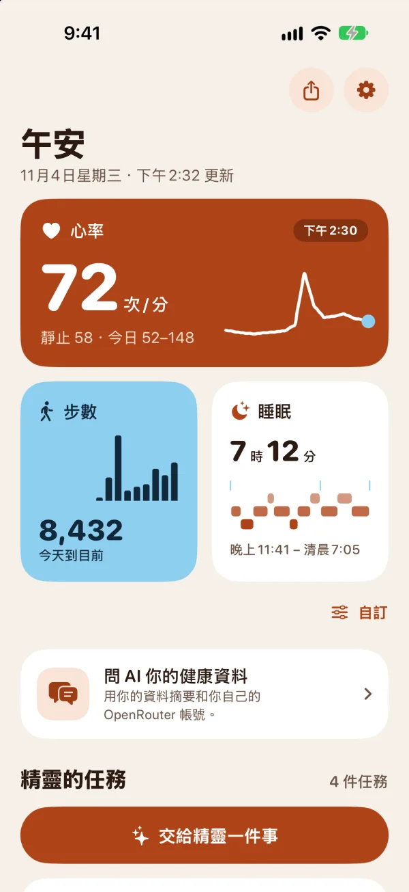
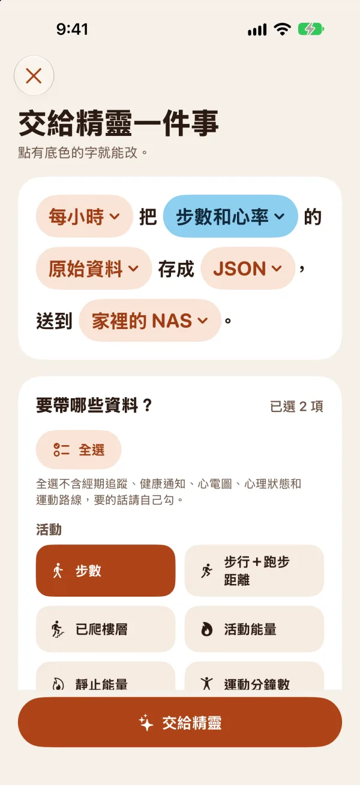
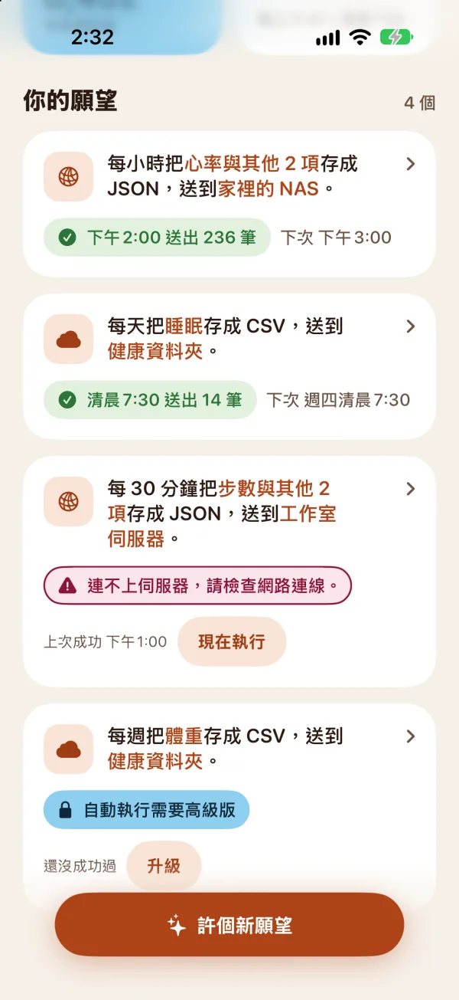

你的健康資料， 只送到你指定的地方
許願精靈：健康匯出（Wish Genie: Health Export）是一款 iPhone App，從「健康」App 讀取資料，送到你指定的地方。不用註冊帳號，你的資料也不會經過我們的伺服器，因為我們根本沒有架伺服器。

交給精靈一件事
把健康資料（80 多種，還有體能訓練）存成 JSON 或 CSV，定時或隨時送到 iCloud 雲碟、Dropbox、Google 雲端硬碟、OneDrive，或你自己的 REST API。
OneDrive 支援個人版。AI 摘要存成 Markdown 或 JSON。


每小時／每天彙總與 AI 摘要
AI 助理 App 好讀的摘要
每小時或每天的彙總
精靈能把資料做成每小時或每天的彙總。
最近 7、30、90 天
做成摘要分享給 AI 助理 App，或在 App 裡用你自己的 OpenRouter 帳號問 AI 模型。
固定檔名的最新版
任務也能用固定檔名另存一份最新版，讓你自己的 AI 工具定時讀取。

不用帳號，
沒有伺服器。
- 我們不收集任何資料。
- 你的資料不會經過我們的伺服器，因為我們根本沒有架伺服器。
- 精靈只讀取「健康」的資料，從不寫入。